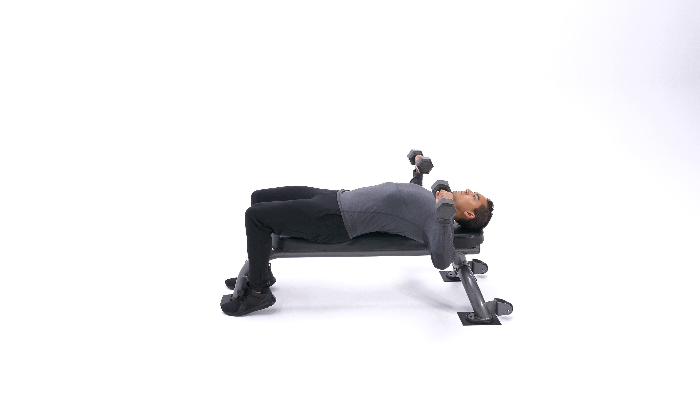
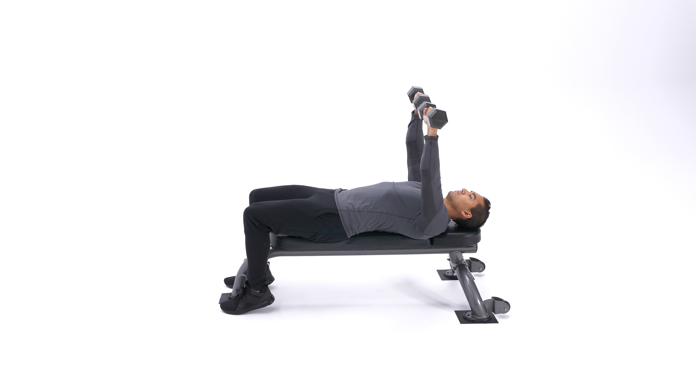

The dumbbell bench press is a mainstay of workout enthusiasts worldwide. It’s a classic move for building a bigger, stronger chest. As such, it’s often placed first in mass-building chest workouts.
1. Lie down on a flat bench with a dumbbell in each hand resting on top of your thighs. The palms of your hands will be facing each other.
2. Then, using your thighs to help raise the dumbbells up, lift the dumbbells one at a time so that you can hold them in front of you at shoulder width.
3. Once at shoulder width, rotate your wrists forward so that the palms of your hands are facing away from you. The dumbbells should be just to the sides of your chest, with your upper arm and forearm creating a 90 degree angle. Be sure to maintain full control of the dumbbells at all times. This will be your starting position.
4. Then, as you breathe out, use your chest to push the dumbbells up. Lock your arms at the top of the lift and squeeze your chest, hold for a second and then begin coming down slowly. Tip: Ideally, lowering
5. Repeat the movement for the prescribed amount of repetitions of your training program.
Caution: When you are done, do not drop the dumbbells next to you as this is dangerous to your rotator cuff in your shoulders and others working out around you.
Just lift your legs from the floor bending at the knees, twist your wrists so that the palms of your hands are facing each other and place the dumbbells on top of your thighs. When both dumbbells are touching your thighs simultaneously push your upper torso up (while pressing the dumbbells on your thighs) and also perform a slight kick forward with your legs (keeping the dumbbells on top of the thighs). By doing this combined movement, momentum will help you get back to a sitting position with both dumbbells still on top of your thighs. At this moment you can place the dumbbells on the floor.
Variations: Another variation of this exercise is to perform it with the palms of the hands facing each other.
Also, you can perform the exercise with the palms facing each other and then twisting the wrist as you lift the dumbbells so that at the top of the movement the palms are facing away from the body. I personally do not use this variation very often as it seems to be hard on my shoulders.
1. Builds bigger pectorals.
2. Also works the triceps and deltoids, particularly the front heads.
3. One side cant compensate for the other, as in the barbell bench press
This is the Chest Press in the down position.
This is the Shoulder Press in the up position.
